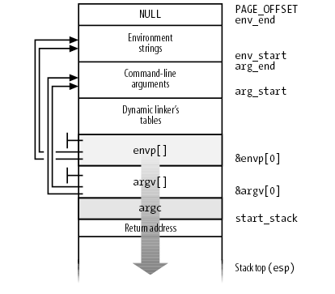

Linux Kernel: Program Exzecution
Table of Contents
1. Linux Kernel: Program Exzecution
1.1. do_execve
do_execve (filename, argv, envp, regs): struct linux_binprm *bprm = kmalloc(sizeof(*bprm), GFP_KERNEL); memset(bprm, 0, sizeof(*bprm)); file = open_exec(filename); path_lookup(name, LOOKUP_FOLLOW|LOOKUP_OPEN, &nd); permission(inode, MAY_EXEC, &nd); return dentry_open(nd.dentry, nd.mnt, O_RDONLY); // sched_exec 和 cpu load balance 有关, 具体参考 // [[file:process_scheduling.org::*push%20task][push task]] sched_exec() // MAX_ARG_PAGES 默认为 32, 表示给 argv 和 env 预留最多 32 个 page, 若 // page 为 4k, 则最终预留 128K // // 后续 argv 和 env 需要从 user 复制到 bprm->page 中, 复制时需要根据 // bprm->p 指示复制到 page 的什么位置 bprm->p = PAGE_SIZE*MAX_ARG_PAGES-sizeof(void *); bprm->file = file; // bprm->filename 和 bprm->interp 一般是一致的, 但有例外: // 例如对于动态链接的 elf 来说, filename 为 elf 本身, interp 为 elf 指 // 示的 interp, 例如 /lib/ld-linux.so.2 bprm->filename = filename; bprm->interp = filename; bprm->mm = mm_alloc(); bprm->argc = count(argv); bprm->envc = count(envp); prepare_binprm(bprm) mode = inode->i_mode; bprm->e_uid = current->euid; bprm->e_gid = current->egid; // setuid if (mode & S_ISUID): bprm->e_uid = inode->i_uid; // setgid if ((mode & (S_ISGID | S_IXGRP)) == (S_ISGID | S_IXGRP)): bprm->e_gid = inode->i_gid; // 将文件开头的 BINPRM_BUF_SIZE (128) 字节的数据读到 bprm->buf 中, 后 // 续各个 linux_binfmt 会通过 bprm->buf 来确认它是否支持这种可执行文件格式 return kernel_read(bprm->file,0,bprm->buf,BINPRM_BUF_SIZE); // copy_strings 将 argv, envp 以及 filename 复制到 bprm->page 中, 后续 // 这些内容将通过设置页表的方式出现在进程地址空间中 stack 之上的部分 // // 通过 copy_strings 的代码, 可以看到最终的用户空间布局上从高到低的顺序 // 为: // 1. filename // 2. env // 3. argv copy_strings_kernel(1, &bprm->filename, bprm); copy_strings(bprm->envc, envp, bprm); copy_strings(bprm->argc, argv, bprm); // execve 最关键的部分: 遍历所有 linux_binfmt, 期望某一个 binfmt 可以支 // 持这个可执行文件并完成后续的过程(例如文件中各个 section 的加载, // 程序入口的确定等) search_binary_handler(bprm,regs);
1.1.1. copy_strings
do_execve 的一个重要的任务是根据 user mode 的 argv, envp 设置好新进程的 argv 和 envp.
进程的 argv, envp 及 stack 有的关系如图所示:

这个布局并不是一步到位的: 在 do_execve 的早期, 比如 copy_strings 阶段, 只会将 argv, envp 复制到 bprm->page 中, 但复制时就会考虑最终的布局, 以便后面可以通过设置页表完成最后的布局
copy_strings(argc, argv, bprm): while (argc-- > 0): char __user *str; // str 代表 argv 中的一项 get_user(str, argv+argc); len = strnlen_user(str, bprm->p) // 调整 bprm->p, 给 str 留出空间, 可以看到, argv[1] 对应的 bprm->p 比 // argv[0] 的更大, 而后面 copy 到 bprm->page 时使用 bprm->p 做为 // offset, 所以 argv[0] 将位于 bprm->page 的高地址, 而最终 bprm->page // 会被通过映射页表的方式 "平移" 到 stack 顶端, 所以 argv[1] 指向的地 // 址最终会在 argv[0] 之上 bprm->p -= len; pos = bprm->p; // 将对应的 argv 复制到合适的 bprm->page[i] 的合适的位置 (根据 bprm->p) offset = pos % PAGE_SIZE; i = pos/PAGE_SIZE; page = bprm->page[i]; // 按需要分配新的 page 并用 kmap 映射, 以便后面复制到这个 page if (!page): page = alloc_page(GFP_HIGHUSER); bprm->page[i] = page; if (page != kmapped_page): if (kmapped_page): kunmap(kmapped_page); kmapped_page = page; kaddr = kmap(kmapped_page); copy_from_user(kaddr+offset, str, bytes_to_copy);
针对 argv, envp 的 copy_strings 完成后, bprm->page 中的布局已经与上面图中的 "Environment Strings" 和 "Command-line arguments" 是一致的了, 后续会把它们 "平移" 到最终的用户空间布局上, 并且需要设置好 envp[], argv[] 和 argc
1.1.2. search_binary_handler
search_binary_handler 是 do_execve 最重要的一步, 它所做的并不仅仅是 "search": 当 search_binary_handler 返回后, 整个用户地址空间都已经设置好了, pt_regs 上 esp, eip 的值已经被设置为正确的值, 当 do_execve syscall 返回后, 进程就会从可执行文件的入口开始执行了
所谓的 binary handler, 是指 linux_binfmt, 系统启动时会注册几个 linux_binfmt, 对应不同的可执行文件格式, 例如:
- aout_format
- elf_format
- script_format
- misc_format
kernel 通过 register_binfmt 完成 linux_binfmt 的注册
1.1.2.1. register_binfmt
register_binfmt(fmt): struct linux_binfmt ** tmp = &formats; fmt->next = formats; formats = fmt;
register_binfmt 的过程仅仅是将一种 linux_binfmt 插入到一个全局的 formats 链表的末尾
1.1.2.2. linux_binfmt
struct linux_binfmt { struct linux_binfmt * next; struct module *module; int (*load_binary)(struct linux_binprm *, struct pt_regs * regs); int (*load_shlib)(struct file *); int (*core_dump)(long signr, struct pt_regs * regs, struct file * file); unsigned long min_coredump; /* minimal dump size */ };
其中最重要的是 load_binary 这个回调函数, search_binary_handler 时会 formats 中所有的 linux_binfmt 并调用其 load_binary, 直到某个 load_binary 成功为止.
1.1.2.3. search_binary_handler
search_binary_handler(bprm,regs): for (fmt = formats ; fmt ; fmt = fmt->next): int (*fn)(struct linux_binprm *, struct pt_regs *) = fmt->load_binary; retval = fn(bprm, regs); if (retval >= 0): return retval;
可见 do_execve 最主要的工作由 linux_binfmt->load_binary 完成
1.2. ELF 的加载
load_elf_binary 是 elf_format 对应的 load_binary 实现
1.2.1. load_elf_binary
load_elf_binary(bprm, regs): // 动态链接的 elf 程序会指定 interpreter, 则程序的入口不再是 elf 本身的 // e_entry, 而是 interpreter 的 e_entry loc->elf_ex = *((struct elfhdr *) bprm->buf); // 看 elf 中是否包含 PT_INTERP section (.interp) for (i = 0; i < loc->elf_ex.e_phnum; i++): if (elf_ppnt->p_type == PT_INTERP): // 读取 interp 的名字 (例如 /lib/ld-linux.so.2) 保存在 // elf_interpreter 中 elf_interpreter = (char *) kmalloc(elf_ppnt->p_filesz, GFP_KERNEL); kernel_read(bprm->file, elf_ppnt->p_offset,elf_interpreter, elf_ppnt->p_filesz); // 打开 interpreter 文件 interpreter = open_exec(elf_interpreter); kernel_read(interpreter, 0, bprm->buf, BINPRM_BUF_SIZE); // 杀死其它线程, 按照 man 2 execve 的说法: // All threads other than // the calling thread are destroyed during an execve(). flush_old_exec(bprm); de_thread(current); zap_other_threads(current); for (t = next_thread(p); t != p; t = next_thread(t)): sigaddset(&t->pending.signal, SIGKILL); signal_wake_up(t, 1); // 选择 mmap layout, 参考 [[file:memory.org::*get_unmapped_area][get_unmapped_area]] arch_pick_mmap_layout(current->mm); // 将保存着 argv 和 envp 的 bprm->page "平移" 到最终的用户地址空间中 setup_arg_pages(bprm, STACK_TOP, executable_stack); // 这个值后面会被设置为 regs->esp, 从而成为新进程的栈顶 current->mm->start_stack = bprm->p; // 把 elf 中所有为 PT_LOAD 的 segment 通过 mmap 映射进来, PT_LOAD 的 // segment 主要包括: text, init, rodata, data, bss 等 section for(i = 0, elf_ppnt = elf_phdata; i < loc->elf_ex.e_phnum; i++, elf_ppnt++): if (elf_ppnt->p_type != PT_LOAD): continue; // 设置 mmap 的 prot 和 flags if (elf_ppnt->p_flags & PF_R) elf_prot |= PROT_READ; if (elf_ppnt->p_flags & PF_W) elf_prot |= PROT_WRITE; if (elf_ppnt->p_flags & PF_X) elf_prot |= PROT_EXEC; elf_flags = MAP_PRIVATE|MAP_DENYWRITE|MAP_EXECUTABLE; // 需要 mmap 到的地址, 编译时由链接器脚本 (ld script) 指定, 写入在 // elf 文件中 vaddr = elf_ppnt->p_vaddr; // mmap elf_map(bprm->file, load_bias + vaddr, elf_ppnt, elf_prot, elf_flags); // 动态编译的 elf 程序指定了 interpreter, 所以其入口不再是 e_entry, 而 // 是 interpreter 对应的 e_entry if (elf_interpreter): elf_entry = load_elf_interp(&loc->interp_elf_ex,interpreter,&interp_load_addr); else: // 静态编译的程序, 直接使用 e_entry 做为入口, e_entry 在 x86_32 下一 // 般固定为 0x80482c0, 对应于 crt1.o 中的 __start 函数, 由 ld script // 指定 elf_entry = loc->elf_ex.e_entry; create_elf_tables(bprm, &loc->elf_ex, (interpreter_type == INTERPRETER_AOUT),load_addr, interp_load_addr); current->mm->end_code = end_code; current->mm->start_code = start_code; current->mm->start_data = start_data; current->mm->end_data = end_data; current->mm->start_stack = bprm->p; // do_execve 返回到 user mode 的最后一步: 设置 regs->{eip,esp, ...} 以 // 便从 syscall 返回后能执行 elf 程序 start_thread(regs, elf_entry, bprm->p); regs->xds = __USER_DS; regs->xes = __USER_DS; regs->xss = __USER_DS; regs->xcs = __USER_CS; regs->eip = elf_entry; regs->esp = bprm->p;
1.2.2. setup_arg_pages
setup_arg_pages(bprm,stack_top): // stack_top 的值为 STACK_TOP 为 3G, 下面两行代码将 bprm->p "平移" 到了 // 3G 以下对应的位置. 实际上在新版本的 kernel 中, 这里的 stack_top 传进 // 来之前已经随机过了, 实际的值是 STACK_TOP - random_offset (参考 // randomize_stack_top) stack_base = stack_top - MAX_ARG_PAGES * PAGE_SIZE; bprm->p += stack_base; mm->arg_start = bprm->p; arg_size = stack_top - (PAGE_MASK & (unsigned long) mm->arg_start); mpnt = kmem_cache_alloc(vm_area_cachep, SLAB_KERNEL); mpnt->vm_mm = current->mm; // 这个 vma 对应 args+stack, 但初始大小只包括 args 的部分 (argv, envp), // 但这并没有问题, 因为 vma 的 VM_GROWSDOWN flag 保证访问 stack 时并不 // 会出错 mpnt->vm_end = stack_top; mpnt->vm_start = mpnt->vm_end - arg_size; mpnt->vm_flags = VM_STACK_FLAGS; mpnt->vm_flags |= mm->def_flags; mpnt->vm_page_prot = protection_map[mpnt->vm_flags & 0x7]; insert_vm_struct(mm, mpnt) // 将 bprm->page 映射到前面的 vma 中 for (i = 0 ; i < MAX_ARG_PAGES ; i++): struct page *page = bprm->page[i]; if (page): bprm->page[i] = NULL; install_arg_page(mpnt, page, stack_base); stack_base += PAGE_SIZE;
1.2.3. create_elf_tables
create_elf_tables 主要还是和 argv, envp 的处理有关:
- copy_strings 负责复制 argv, envp 到 bprm->page 并维护 bprm->p
- setup_arg_pages 负责将 bprm->p "平移" 到最终的地址空间 (STACK_TOP), 创建 VMA 并将 bprm->page 映射到 VMA
但还有一部分没有 ready: 前面两步只是设置好了 argv, envp 指向的数据, 紧接着栈底之上 argc 和 argv, envp 本身呢?
create_elf_tables 会 setup 最后这一部分
create_elf_tables: int argc = bprm->argc; // bprm->p 是栈底 sp = (elf_addr_t __user *)bprm->p; // argc __put_user(argc, sp++) argv = sp; // +1 是因为 argv[] 最后一个元素是 NULL envp = argv + argc + 1; // 填充 argv[] p = current->mm->arg_start; while (argc-- > 0): size_t len; __put_user((elf_addr_t)p, argv++); // strnlen_user 与 libc 中的 strnlen 并不一样: strnlen_user 返回的长 // 度是包括结尾的 NULL 的 len = strnlen_user((void __user *)p); p += len; // finally, argv __put_user(0, argv) // 填充 envp[] while (envc-- > 0): size_t len; __put_user((elf_addr_t)p, envp++); len = strnlen_user((void __user *)p, PAGE_SIZE*MAX_ARG_PAGES); p += len; // finally, envp __put_user(0, envp)
1.2.4. load_elf_interp
当 elf 指定了 .interp 时, 程序的入口不再是 elf 本身的 entry, 而是 interp 的 entry
load_elf_interp(interpreter): kernel_read(interpreter,interp_elf_ex->e_phoff,(char *)elf_phdata,size); for (i=0; i<interp_elf_ex->e_phnum; i++, eppnt++): if (eppnt->p_type == PT_LOAD) { int elf_type = MAP_PRIVATE | MAP_DENYWRITE; int elf_prot = 0; unsigned long vaddr = 0; unsigned long k, map_addr; if (eppnt->p_flags & PF_R) elf_prot = PROT_READ; if (eppnt->p_flags & PF_W) elf_prot |= PROT_WRITE; if (eppnt->p_flags & PF_X) elf_prot |= PROT_EXEC; vaddr = eppnt->p_vaddr; map_addr = elf_map(interpreter, load_addr + vaddr, eppnt, elf_prot, elf_type); // 第一个被 mmap 必定是 .text? if (!load_addr_set && interp_elf_ex->e_type == ET_DYN): load_addr = map_addr - ELF_PAGESTART(vaddr); load_addr_set = 1; load_addr = map_addr - ELF_PAGESTART(vaddr); return ((unsigned long) interp_elf_ex->e_entry) + load_addr;
1.2.5. ELF 程序引用 argc, argv
argc 和 argv 已经放在栈上了, 那么应用程序如何引用到它们?
1.2.5.1. 示例程序
void hello(int a) { printf("%d\n", a); } int main(int argc, char *argv[]) { return 0; }
通过如下的命令编译. 为了避免 libc 自动加入的入口 (_start) 的影响, 编译时直接指定了 entry 为 hello.
gcc -g test.c -m32 -Wl,-ehello -O0
示例中的 main 函数并没什么用, 但由于编译时使用 libc 会默认插入一个 _start 并会引用 main, 通过 `gcc -nostdlib` 可以避免上述情况, 但用了 nostdlib 后又无法使用 libc 中提供的函数例如 printf…为了能编译通过, 只好写一个无用的 main…
1.2.5.2. 使用 gdb 分析
#> gdb ./a.out (gdb) set args "hello" (gdb) b hello (gdb) r (gdb) p $esp $1 = (void *) 0xffffc444 (gdb) p $ebp $2 = (void *) 0xffffc44c (gdb) disass Dump of assembler code for function hello: 0x080483eb <+0>: push %ebp 0x080483ec <+1>: mov %esp,%ebp 0x080483ee <+3>: sub $0x8,%esp => 0x080483f1 <+6>: sub $0x8,%esp 0x080483f4 <+9>: pushl 0x8(%ebp) 0x080483f7 <+12>: push $0x80484c0 0x080483fc <+17>: call 0x80482c0 <printf@plt> 0x08048401 <+22>: add $0x10,%esp 0x08048404 <+25>: nop 0x08048405 <+26>: leave 0x08048406 <+27>: ret End of assembler dump. (gdb) x /10x $ebp 0xffffc44c: 0x00000000 0x00000002 0xffffc611 0xffffc624 0xffffc45c: 0x00000000 0xffffc62b 0xffffc636 0xffffc655 0xffffc46c: 0xffffc667 0xffffc67a # 当前的栈布局: # # 1. 0x00000000 是 hello 第一行的 `push $ebp` push 到栈里的 "上一个 # stack frame" 的 ebp, 由于 hello 是 elf 的 entry, 所以并不存在 "上一 # 个 stack frame", 所以这里会是 0 # 2. 0x00000002 是 argc # 3. 0xffffc611 是 argv[0] # 4. 0xffffc624 是 argv[1] # 5. 0x00000000 是 argv 结尾的 NULL # 6. 0xffffc62b 是 envp[0] # 7. .... (gdb) p (char*)0xffffc611 $2 = 0xffffc611 "/home/sunway/a.out" (gdb) p (char*)0xffffc624 $3 = 0xffffc624 " hello" (gdb) p (char*)0xffffc62b $4 = 0xffffc62b "XDG_VTNR=1" # hello 函数的参数 a 实际上对应 0xffffc611 即 argv[0], 从前面 disass 的 # 结果看, a 是通过 ebp+8 引用的: 为什么是 ebp + 8? # # 根据 c 的调用约定: # # 1. 首先参数入栈 # 2. call 导致返回地址入栈 (4B) # 3. 旧的 ebp 入栈 (4B) # 4. ebp 设置为当前的 esp # # 所以 hello 认为的栈布局是: # # 1. 0x00000000 是旧的 ebp # 2. 0x00000002 是返回地址... # 3. 0xffffc611 是第一个参数的值, 也就是 a 的值 # # 根据这个认识, hello 通过 a 必然无法拿到真正的 argc, 而且因为 hello 认 # 为返回地址是 0x00000002, 导致 hello 返回时会报错 (gdb) x a 0xffffc611: 0x6d6f682f (gdb) n -14831 3 } # 把 0x00000002 误认为是返回地址 (gdb) n 0x00000002 in ?? () # 栈上在 0x00000002 后面直接就是平铺的 argv[0], argv[1] (`0xffffc611 # 0xffffc624`), 而普通的 main 函数的原型是 main(int argc, char ** argv), # 即 main 函数期望栈上在 argc 之后是一个 char ** 指针, 而不是平铺的 # argv[0], argv[1]... # # 另一方面, 有些平台上函数的参数并不是像 x86 一样从栈上取的, 以 arm 为例, # 它的调用约定要求 r0, r1, r2, r3 保存前四个参数, 其它参数才需要从栈上取, # 这种情况下 hello 函数更不可能直接取到相应的参数 # # 因此, elf 的 entry 要么自己用 trick 来获取参数, 要么由更高层的 entry 帮 # 自己获取参数, 毕竟 kernel 调用 entry 时是通过直接修改 eip 跳转的, 并不 # 考虑它做为一个函数的调用约定
1.2.5.3. 实现一个简单的 entry
void entry () { int ebp = 0; __asm__("movl %%ebp,%0":"=r" (ebp)); exit(hello(*((int *)(ebp + 4)), (char **)(ebp+8))); } int hello(int argc, char ** argv) { printf("%d\n", argc); int i = 0; for (i = 0; i < argc; i++) { printf("%s\n", argv[i]); } return 0; } int main(int argc, char *argv[]) { return 0; }
测试:
$> gcc -g test.c -m32 -Wl,-eentry -O0 $> ./a.out 1 ./a.out $> ./a.out hello 2 ./a.out hello
实际上, 正常编译的 c 程序会使用 libc 提供的 entry (_start) 来调用 main 函数, 以便 main 函数可以直接使用 argc 和 argv
1.3. script 的加载
load_script 负责 script (bash, perl, python …) 的加载
load_script(bprm, regs): // script 都是以 #! 开头 if ((bprm->buf[0] != '#') || (bprm->buf[1] != '!') || (bprm->sh_bang)): return -ENOEXEC; // 解析 #! 后的 interpreter 名字和参数, 保存在 interp 和 i_arg 中 strcpy (interp, i_name); // 将 bprm->interp 复制到 bprm->page 中, 这时 page 的布局为 (由低到高): // bprm->interp | argv | envp | bprm->filename copy_strings_kernel(1, &bprm->interp, bprm); bprm->argc++; if (i_arg): // sh_bang 中脚本解释器的参数也被追加到 bprm->page 中 copy_strings_kernel(1, &i_arg, bprm); bprm->argc++; copy_strings_kernel(1, &i_name, bprm); bprm->argc++; bprm->interp = interp; // 现在 bprm->page 的布局, 以 she-bang 为 '#!/bin/bash -i' 的 'test.sh // hello' 为例: // /bin/bash | -i | test.sh | hello | envp | test.sh // 所以当 bash 启动时, argv 会是 {/bin/bash, -i, test.sh, hello} // 现在 bprm->interp 和 bprm->file 已经被替换为 /bin/bash, 然后递归的调 // 用 search_binary_handler, 看看如何执行 /bin/bash bprm->file = open_exec(interp); search_binary_handler(bprm,regs);
可见 load_script 的方式允许嵌套的指定, 例如 script 指定 #!/bin/interp1, 而 interp1 也是一个 script, 指定 #!/bin/inter2 … 这种嵌套的处理过程并不复杂: kernel 只需要相应的调整 argv 就可以.
但需要注意的是最内部的一层嵌套必然是一个 "非 script" 类型的可执行程序, 例如 ELF, 后者会通过 setup_arg_pages 和 create_elf_tables 完成 argv 最终的布局
1.4. 用户自定义加载
load_misc_binary 实现用户自定义的加载, 它的过程和 load_script 非常类似, 只不过寻找下一级 interp 的过程不是通过读取 script 的 she-bang, 而是通过用户写到的 '/proc/sys/fs/binfmt_misc/register' 的设定决定的.